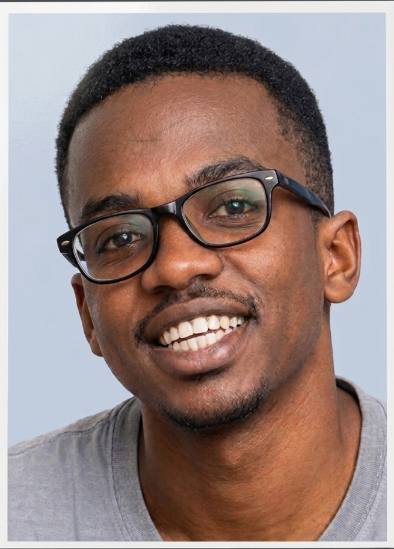

Group leader: JACKSON JOSEPH MARWA.

Gender: Male. | Age: 23.
Education background: Currently pursuing a Bachelor of science in Infirmation technology (BIT),
at the institute of Finance management (IFM),
after successfully completing the secondary education.
This is his Academic journey:
- 2026 - Present: Bachelor of scince in information technology (BIT) - Institute of finance management (IFM).
- 2023 - 2025: Advanced secondary education in EGM combination - Chidya boys high school.
- 2019 - 2022: Ordinary secondary education - Kasita secondary school.
- 2012 - 2018: Primary education - Nang`wanda primary school.
Career: Upcomming software developer (learning HTML, C, and Python).
Future plans: He aim -
- To become innovator in technology
- To master Advanced software development.
His Favourite movies
- The Terminator
- Avatar the fire and ash
- Mr. Robot
- Hidden Root
- The Great Hack.